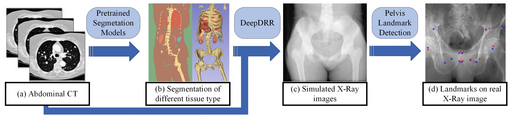
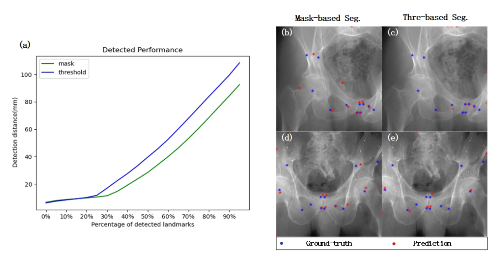

Computer Vision for Fluoroscopy-guided Intervention
Multi-organ Segmentation in the Context of Simlated X-ray Imaging from Digital Twins
Recent research has demonstrated the effectiveness of digitally reconstructed radiographs (DRRs) as a data source for training learning-based systems to assist X-ray image-guided interventions. Here, we identify one step in the process of DRR generation which is impeding the progress of deep learning models trained on these images, namely the tissue segmentation on which X-ray attenuation is modeled. We show that using state-of-the-art multi-organ segmentation models when generating DRRs results in better performing DNNs. In particular, we show that sim-to-real transfer of anatomical landmark detection in the pelvis benefits from readily available state-of-the-art multi-organ segmentation models, which we have integrated into the popular DeepDRR framework so as to benefit the community.

Figure: Overview of the DRR generation pipeline. We hypothesize that more sophisticated anatomical tissue segmen-
tation, as shown in (b), provides a higher quality data source for training deep neural networks on downstream tasks,
such as anatomical landmark detection on the pelvis (d).
Deep Learning based Material Segmentation
In this study, nnU-Net and CT-ORG Net are used to generate multi-organ material segmentation. With different tissue types from nn-UNet, CT-ORG Net and thresholding, a material segmentation of 11 categories is fed into DeepDRR, including bone, liver, bladder, lung, kidney, spleen, gallbladder, esophagus, stomach, other soft tissue and air.
Evaluation Task: Pelvis Landmark Detection
Simulation image datasets for both material segmentation strategies (thresholding and deep learning based method) are established based on a set of CT volumes. For each of the 20 CT cases, X-Ray images with size of 768×768 are projected from 200 different views with the direction of principle rays evenly distributed in the cone region within 30 degrees around the AP direction. A U-Net is trained on these two simulation datasets for the detection of 12 pelvis landmarks, with the results showing in the following figure.

Figure: Performance measurement and examples of landmark detection task. (a) Performance measurement of land-
marks detection distance on real X-ray image dataset. (b),(d) examples from mask-based landmark detection. (c),(e)
examples from thresholding-based landmark detection.
© Wu,Qiyuan. All Rights Reserved. Designed by HTML Codex